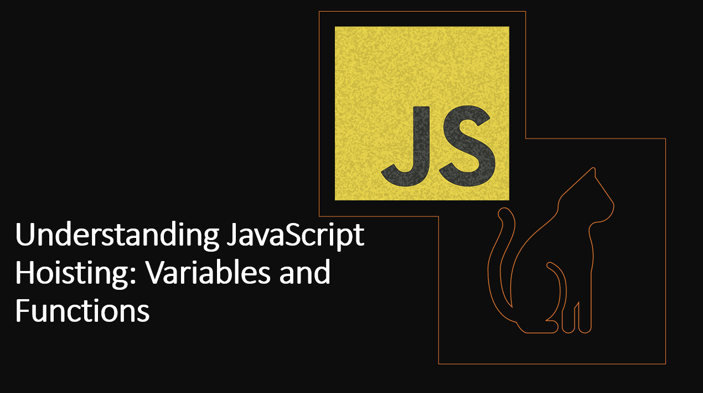

Introduction
JavaScript hoisting is a concept that can sometimes lead to unexpected behavior in your code if not properly understood.
Hoisting refers to the way JavaScript processes variable and function declarations during the compilation phase.
In this guide, we'll dive into the world of hoisting, how it affects variables and functions, and how to write code that avoids unexpected behavior. We'll also cover some best practices to help you write cleaner and more maintainable code.
Suggested Tutorials 📑:
What is Hoisting?
Hoisting is a JavaScript mechanism where variables and function declarations are moved to the top of their scope before code execution. Inevitably, this means that no matter where functions and variables are declared, they are moved to the top of their scope regardless of whether their scope is global or local.
In JavaScript, variable declarations are hoisted to the top of their containing scope during compilation, but not their assignments.
As an exampmle:
console.log(x);
var x = 10;
In the above example:
- The declaration
var x; is hoisted to the top, but the assignment is not. Hence, x is undefined when it's accessed before the assignment.
The above code snippet is interpreted by the JavaScript engine as:
var x;
console.log(x);
x = 10;
Function declarations are hoisted to the top of their containing scope during compilation, but not their assignments.
As an exampmle:
foo();
function foo() {
console.log("Hello World");
}
Suggested Tutorials 📑:
In the above example:
- The function declaration
function foo() { console.log("Hello World"); } is hoisted to the top, but the assignment is not. Hence, foo() is "Hello World" when it's accessed before the assignment.
The above code snippet is interpreted by the JavaScript engine as:
function foo() {
console.log("Hello World");
}
foo();
3. Function Expressions
Function expressions are not hoisted.
As an exampmle:
foo();
var foo = function() {
console.log("Hello World");
};
In the above example:
- The function expression
var foo = function() { console.log("Hello World"); }; is not hoisted. Hence, foo() is undefined when it's accessed before the assignment.
The above code snippet is interpreted by the JavaScript engine as:
var foo;
foo();
foo = function() {
console.log("Hello World");
};
Suggested Tutorials 📑:
4. Function Hoisting vs Variable Hoisting
Function declarations are hoisted before variable declarations. This means that if you have both a variable and a function with the same name, the function declaration will take precedence.
As an exampmle:
console.log(foo);
var foo = 10;
function foo() {
console.log("Function foo");
}
console.log(foo);
In the above example:
- The function declaration
function foo() { console.log("Function foo"); } is hoisted before the variable declaration var foo = 10;. Hence, foo is [Function: foo] when it's accessed before the assignment.
The above code snippet is interpreted by the JavaScript engine as:
function foo() {
console.log("Function foo");
}
var foo;
console.log(foo);
foo = 10;
console.log(foo);
5. Block Scoping
With the introduction of let and const, variables declared with these keywords have block-level scope and are not hoisted to the entire function or global scope.
console.log(x);
let x = 10;
Suggested Tutorials 📑:
In the above example:
- The variable declaration
let x = 10; is not hoisted. Hence, x is undefined when it's accessed before the assignment.
The above code snippet is interpreted by the JavaScript engine as:
let x;
console.log(x);
x = 10;
6. Best Practices
To avoid unexpected behavior caused by hoisting, it's recommended to follow these best practices:
- Declare variables at the beginning of their scope.
- Declare functions before using them.
- Use
let and const for better scoping and to catch potential errors.
Suggested Tutorials 📑:
Conclusion
Understanding JavaScript hoisting is crucial for writing clean and predictable code. Variables and function declarations are hoisted to the top of their scope during compilation, leading to potentially unexpected behavior if not properly managed. By following best practices, declaring variables and functions before they are used, and being aware of how hoisting works, you can avoid common mistakes and write code that is more maintainable and less error-prone.
We hope you found this guide useful.
Happy learning! 🎉